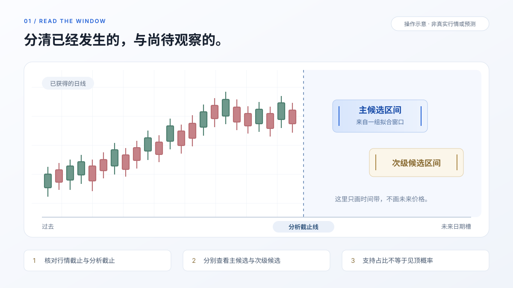
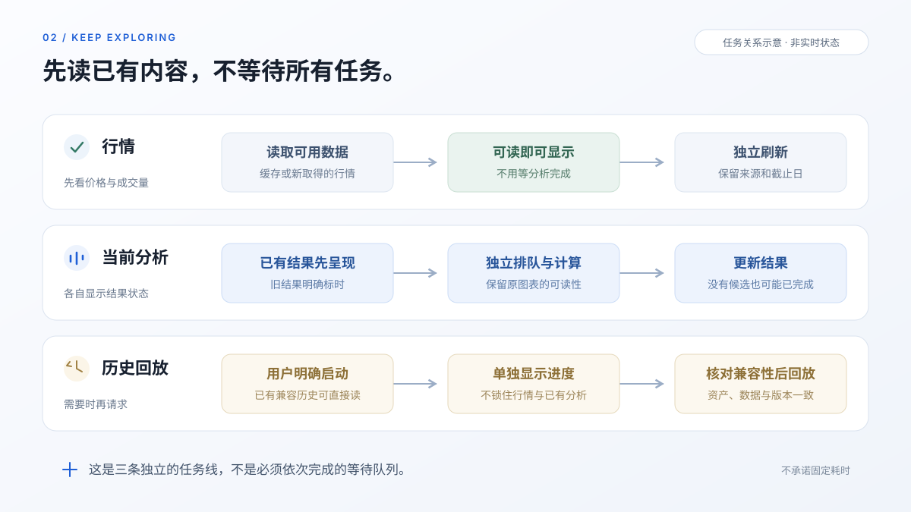
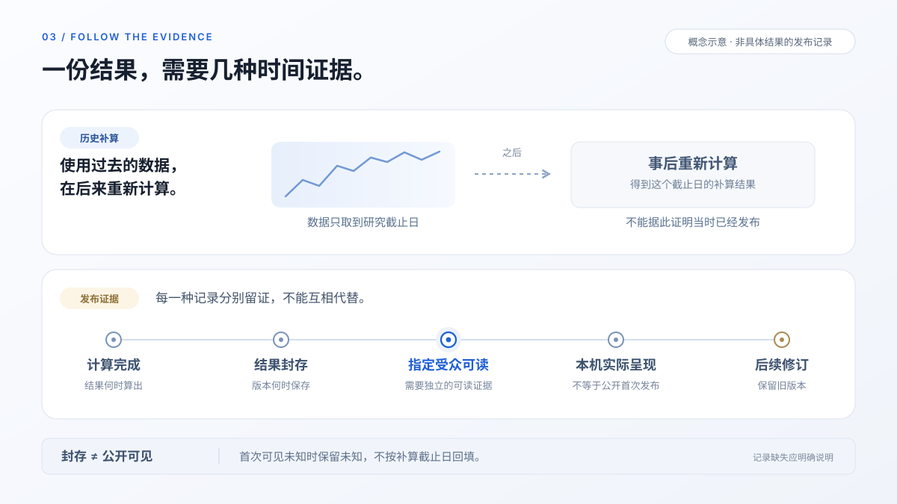

行情截至哪天、分析使用哪天以前的数据，是两个问题。确认截止日后，再看哪些尺度给出候选区间，哪些尺度存在分歧。

操作示意 · 非真实行情或预测打开完整图解 ↗
分别读两个截止日
最新报价可以晚于分析截止日。不要把今天的报价日期，理解成模型已经使用了今天的数据。
保留不同候选
多个簇可能给出不同时间范围。先看各自的尺度与支持记录，不把分歧平均成一个精确日期。
把区间当作研究线索
模型临界时间不等于已确定的实际峰值日；支持占比也不等于真实见顶概率。
02
KEEP EXPLORING
行情、分析与回放分别进行
输入资产后，先看已取得的行情和已有结果。当前分析与历史回放分别显示状态；等待其中一项时，可以继续阅读其他已可用的内容。

任务关系示意 · 非实时运行状态打开完整图解 ↗
先读已经可用的内容
行情、已有分析和新闻各有自己的状态。一块内容暂时失败，不应被理解成整个资产没有数据。
区分空结果与失败
“分析完成但没有候选”是结果；“未加载、计算失败、数据过期”则需要查看对应原因与日期。
历史回放按需启动
需要研究过去时再请求历史计算。已有历史是否能用，还取决于资产、模型版本和数据是否兼容。
03
FOLLOW THE EVIDENCE
找到结果背后的证据
历史补算回答“只用截止日前的数据，会得到什么”；真实发布记录回答“当时用户实际能看到什么”。两者都能用于研究，但不能互相替代。

证据结构示意 · 不代表每个结果已具备全部记录打开完整图解 ↗
先确认结果模式
区分当前分析、历史补算和有发布证据的回放。事后生成的旧日期结果，不能算作当时已经发布的预测。
检查时点与来源
计算完成、封存、对指定受众可读、本机实际呈现，是不同记录。缺少首次可见证据时，保留未知。
让修订留下痕迹
比较历史区间需要原始结果、规则和修订记录；缺少记录时，不能依据最新结果还原旧区间。